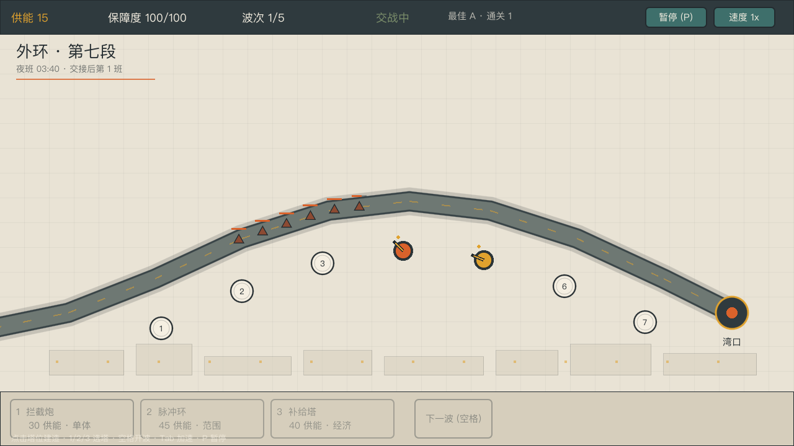
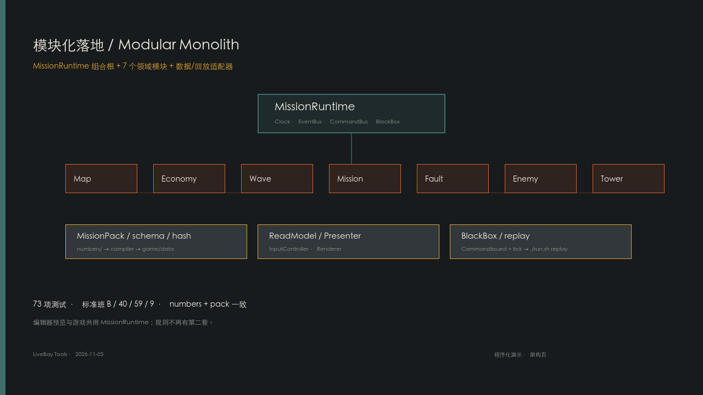
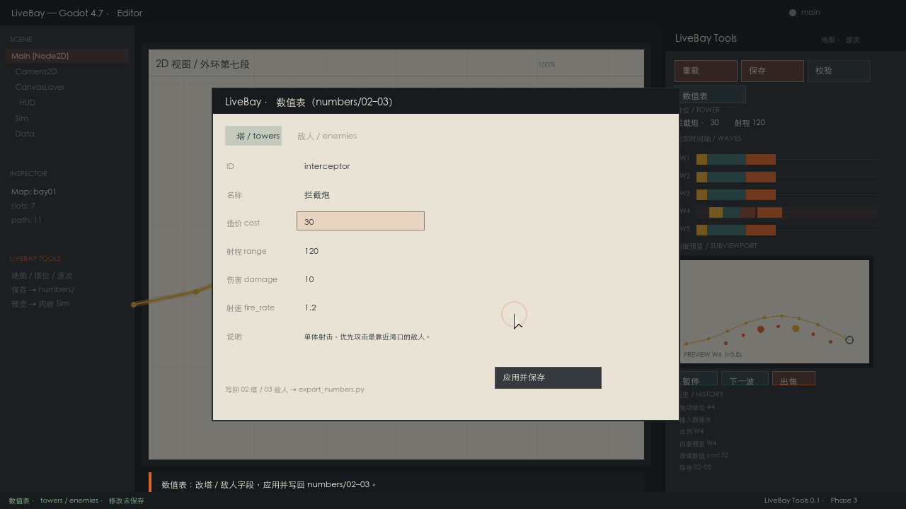

它已经能玩什么
外环第七段、中环维护环、湾口对接臂三张图；6 种塔、7 种敌人（含故障/护盾/分裂）、8 波、准备/交战/整备/结算、建造/升级/出售/暂停/倍速/存档；无头测试可复现胜负。
LiveBay 是 NASApunk 岗位塔防 + 沉浸体验 + 放置养成的垂直切片，正在把 Solarpunk 的太阳能/循环/可持续政治经济接进同一座城。你不是指挥官；你是外环第七段的一个值班人，在 8 波压力里决定先修哪台设备、先守哪段弧。
外环第七段、中环维护环、湾口对接臂三张图；6 种塔、7 种敌人（含故障/护盾/分裂）、8 波、准备/交战/整备/结算、建造/升级/出售/暂停/倍速/存档；无头测试可复现胜负。
外环第七段：7 塔位弧形主防线；中环维护环：9 塔位回环，供能 -15、保障度 -10、塔伤 0.8；湾口对接臂：5 塔位短路径，供能 +10、保障度 -15。每张图有独立波次表，顶部「地图 (G)」切换。
不是完整游戏，不是 L2/L3 城市模拟，也不是最终平衡。所有中文名词和数值仍是工程占位；正式内容要等人类裁决与内容生产。
10 分钟闭环：玩家是否能在一次班次里理解“供能—建造—故障—修复—评级”的因果，并愿意再来一班。
给玩家和你自己一个不受主线约束、但仍属于逍遥湾的实验场：用 JSON 搭玩法、打标签、调数值、快速试玩；好设定变成候选，不自动进主线。
启动先到独立主页「今晚，守哪一段？」；选「自由模式」进入独立实验页。页面由 App 路由器切换，不是 overlay。游戏内按 L 回实验页；F1 回主页；弹层右上角 × 或 Esc 关闭；Q 退出并确认。
每个实验是一个 JSON：元数据 + 标签 + 白名单覆盖。只读 game/data/lab/scenarios/，不写主线数据。
默认独立运行时、空 ShiftMemory；实验不写主线存档。没有脚本/MOD/在线分享。
| 实验 | 主轴 | 难度 | 覆盖 |
|---|---|---|---|
| 紧缩外环 | 塔防 | 困难 | 供能 −20，敌人 HP +10% |
| 维护环慢班 | 放置 / 混合 | 容易 | 供能 +80，HP −30%，速度 −10% |
| 湾口故障潮 | 塔防 | 超难 | 供能 +20，HP +20%，速度 +10%，故障 +1.5s |
| 无补给外环 | 塔防 | 困难 | 禁用补给塔，供能 +10；演示动态塔位 |
| 低功率夜班 | 生存 / 塔防 | 困难 | 救援 5 分钟；电力分给塔组/生命维持；氧气与备用电池 |
浏览器支持主轴 / 难度筛选；标签体系还包括主题、机制、时长、保真度与状态。
| 阶段 | 内容 | 状态 |
|---|---|---|
| P1 | 本地实验场：浏览器 + 标签 + JSON 覆盖 + 3 样例 + 独立运行时 | 已实现 |
| P2 | 候选 diff 写入 user://lab/candidates/ | 已实现 |
| P3 | 实验导出到 user://lab/exports/，文件对话框导入 | 已实现 |
| 独立页 | LabPage + LabGame + LabHud，不复用主模式 GamePage/HUD | 已实现 |
| S1 生存 | 低功率夜班：功率分配/氧气/救援/电池 | 已实现 |
| S2 生存 | 封舱/开舱、主动撤离、氧气只扣评级 | 已实现 |
| P4 | 在线工坊 / 脚本 MOD | 不做 |
F1 回主页；主页选主线或自由模式；Q 退出并确认。
L 打开；主轴/难度筛选；每项可「试玩」「候选」「导出」；底部「导入实验」；「返回主线」；右上角 × / Esc 关闭。
user://lab/candidates/ 候选；user://lab/exports/ 实验导出；实验定义在 game/data/lab/scenarios/。候选与导入都不会自动修改主线。方案与生命周期：lab/00_自由模式方案.md；候选/导入导出是本地文件，不做在线服务。
存续力不是“游戏能活多久”，而是项目在时间、资金、精力、人员变动、平台变化与范围膨胀中，继续存在并推进的能力。结论：3.15 / 5（C+，约 63/100）；方向与资产在，缓冲与外部验证不在。
3.15 / 5 · 63 / 100
可继续，无安全垫
低固定成本：无服务器/无在线运营；可复用管线：numbers→data→pack→测试；文档/工具：58 页 + verify + 沙盘 + 编辑器；范围纪律：v0.2 没有新增第四种玩法。
单点依赖：关键知识集中；无收入/预算：买不到美术/发行时间；无人类验证：做对做错都缺反馈；发布未定：D14/D17/D18 仍空着。
权重：目标 10%、范围 10%、单点 10%、资金 10%、时间 10%、文档 10%、技术 10%、内容管线 10%、发布 5%、法律 5%、社区 5%、缓冲 5%。加权 3.15。
| 情景 | 做法 | 风险 |
|---|---|---|
| A · 低速但持续（推荐） | 每周固定 2–3 个晚上；每两周一个可玩版本；先试玩再 L2；不辞职、不借贷、不承诺日期。 | 进度慢，但能长期存在。 |
| B · 冲刺 | 3–6 个月高强度；需要预算/合作/发行支持。 | burnout、范围膨胀、质量下降。 |
| C · 停更保资产 | 保留文档、数据、工具与切片；不删除、不散架；未来可重启。 | 不是失败，是合法的存续。 |
这是一份 AI 设计自评，不是外部评审。看的是“设计是否成立、是否可被玩到、是否值得继续做”，不是代码质量。结论：3.59 / 5（B，约 72/100），设计处于 L2+ 垂直切片；主题与文档强，留存、内容厚度与真人验证弱。
3.59 / 5 · 72 / 100
概念成立 · 切片可玩 · 内容尚薄
核心幻想：移动月牙城 + 外环夜班；世界观/叙事：城市结构、岗位与代价；设计流程：决策、数值、流程图、设计文档互相咬合。
留存/元进程基本未实现；内容厚度仍只有 1 职业 / 3 图 / 8 波；真人验证不足，bay02 在无头试玩里仍偏软。
权重：主题 10%、叙事 8%、循环 15%、系统 12%、数值 10%、地图 10%、UX 10%、美术 8%、留存 7%、可访问 3%、内容 5%、流程 2%。加权 3.59。
| 承诺 | 设计证据 | 当前被玩到了吗 |
|---|---|---|
| 你不是指挥官，是值班人 | 岗位塔防、外环第七段、交接班、检查单、低报 | 部分：L1 检查单/故障选择是样例；大部分时间仍像传统塔防。 |
| 城市不是背景，是系统 | 三环、湾口、舰队集群、岗位与城市生活文档 | 弱：场景与文案有城市，玩法层几乎没有城市模拟。 |
| 夜班有节奏与代价 | 8 波、准备/交战/整备、保障度、故障 | 成立但短：8 波能闭环，岗位压力与失败代价还不够分化。 |
| 故障不是数值，是选择 | 隔离/旁路、W5、相邻塔降级、低报审计 | 是：这是最有辨识度的系统，但只出现一次。 |
| 放置养成 / 长期城市 | L2 岗位、L3 轻城市、ShiftMemory | 否：只有 10 班记录与低报 carry，没有真正的元进程。 |
核心幻想、世界观、8 波循环、3 图独立波次、6 塔/7 敌、故障选择、检查单、结算、HUB/GUIDE、设计决策与数值表。
经济只有单资源；塔/敌组合少；地图有修正但缺少关卡叙事；UX 有 HUD 但新手引导主要靠 HUB/GUIDE；美术是程序化占位；音频只有短音效。
L2/L3、日常循环、城市事件、角色关系、难度选择、成就/解锁、可访问性设置、本地化、云存档/跨平台。
决策记录、58 页设计文档、数值 source、流程图、沙盘、trace；但“文档强、真人验证弱”仍是最大失衡。
10 人 × 3 图，记录理解成本、首波决策、失败归因、是否想再来一班；先验证“值班感”是否真的成立。
不只 W4/W5：每班都有交接、巡检、低报与故障选择；让岗位身份进入常规循环。
在 8 波内加入“修哪段/保哪座/报不报”的二选一，让建造之外也有取舍。
至少一个角色/调度员、城市生活层、音乐与环境音；不然“沉浸体验”仍只是文档。
这是一份 AI 自评，不是外部审计。评分看的是“当前工程能否支撑下一步”，不是“代码是否完美”。结论：3.88 / 5（B+，约 78/100），处于 L2+ 垂直切片，距离可发布的 L3 还差性能、发布与内容厚度。
3.88 / 5 · 78 / 100
L2+：垂直切片成熟，进入发布前工程化
数据单一源：numbers → data → MissionPack；测试与回放：103 断言 + 34 扩展检查 + blackbox；文档与工具：58 页 + 流程图 + 沙盘 + 编辑器。
性能/规模已有 headless 基线，但未测渲染/内存；发布链路未定（D14/D17/D18）；内容厚度仍只有 1 职业 / 3 图 / 8 波。
权重：架构 20%、数据 15%、测试 15%、文档 10%、工具 10%、维护 10%、性能 5%、可观测 5%、交付 10%。加权结果 3.88。
| 维度 | 证据 | 为什么不是满分 |
|---|---|---|
| 架构与边界 | MissionRuntime + 时钟/事件/命令/黑匣子 + 7 领域模块；HUD/流程/输入/会期控制器；扩展包 manifest/preset。 | Sim 仍编排部分 tick；main 仍承担 UI 刷新/信号/绘制；边界还不是“可替换模块”的最终形态。 |
| 数据与单一源 | numbers → export → data → MissionPack schema 2 目录：每图独立 pack_id/map_id/hash；HUB 11 facts 对账；模拟器数据 hash。 | hash 只做格式/归属校验，未做运行时内容重算；目录未签名。 |
| 测试与回归 | 103 项无头断言；34 项扩展检查；editor-test；playtest；flow/simulator-check；headless 性能基线。 | 没有覆盖率指标；没有渲染/内存基准；没有 CI 服务（仅本地 verify）。 |
| 文档与知识 | design01 49 个 HTML 页面；flows；simulator；briefing HUB/GUIDE；决策记录。 | 文档密度高，但存在与实现同步的成本；部分设计仍是提案/样例。 |
| 工具与工作流 | LiveBay Tools 编辑器；numbers 导出；MissionPack 目录；blackbox/replay；流程图；数值沙盘；./run.sh verify。 | 已有本地全量入口，但没有远程 CI；新成员仍需读多个 README。 |
| 可维护/可逆 | 数据驱动；模块可单测；扩展包失败不阻塞核心；回放可复盘。 | Sim 编排、main.gd、部分 HUD 逻辑仍是技术债；没有正式架构守护测试。 |
| 性能与规模 | headless 基线：8 波 p95 0.099 ms、2,000 实体 p95 8.2 ms、5 分钟 0.20 s、地图加载 p95 ≤4.31 ms；CPU draw 0.092 ms/176 calls；静态内存 24→26 MB。 | 只测模拟步进，不含渲染/GPU/音频/内存；单图、合成实体，仍不是完整性能验收。 |
| 可观测/运营 | EventBus + BlackBox + replay；HUD 诊断；sim-trace。 | 没有生产遥测、崩溃上报、指标面板、玩家行为分析。 |
| 交付与发布 | 可运行垂直切片、编辑器、演示视频、存档。 | D14 平台、D17 更新节奏、D18 语言未定；没有打包/签名/发布流水线。 |
已实现 ./run.sh verify：test + expansions-check + editor-test + playtest + numbers/pack + flow + simulator + briefing + 启动 + 链接 + R-016；13 项汇总。
固定场景记录帧时间、实体上限、5 分钟长跑与三图加载时间；把“没测过”变成“有基线”。
HUD/流程/输入/会期/命令/反馈/UI 呈现均已拆出；main 966→210 行；公共色板/布局/塔顺序在 shared/constants.gd，只保留启动、连线、每帧驱动、绘制。下一步再拆 Sim 的索敌/移动编排。
1 职业 / 3 图 / 8 波是切片，不是产品；L1 正式内容、L2 岗位、日常循环需要进入下一阶段。
不用启动 Godot，直接调地图、塔位、等级、敌人速度，观察覆盖、DPS、波次压力与供能。它是一个离线、单页、数据驱动的解析估算器，不是完整战斗复刻。
入口说明与公式见 simulator/README.md；设计取舍见 tech/18 方案。
./run.sh simulator 生成 · ./run.sh simulator-check 校验过期。
三张地图、单波/全部、每个塔位的塔、塔等级 1–3、敌速倍率；支持「标准班」「清空」，场景写入 URL hash，刷新/分享可恢复。
路径长度、覆盖弦长/倍率、理论 DPS、波次 HP/压力、建造与剩余供能、每波奖励/漏过，以及“输出不足 / 覆盖偏窄”的诊断。
弦长 2×sqrt(range²−dist²)；DPS damage×fire_rate×(1+0.25×(level−1))；压力 波次HP/(生成窗口+穿越时间)。详见模拟器 README。
没有逐帧走位、索敌、减速叠加、故障相邻塔、玩家操作误差；P3 的 sim-trace 对账尚未实现。结果只适合相对比较，不替代 Godot 试玩。
一局不是“造塔—看数字”，而是“值班—判断—修复—交接”的压缩。
30 秒（后续波 20 秒）看路径、塔位与供能，决定先造拦截炮还是脉冲环。
敌人沿月牙外弧向湾口移动；漏过扣保障度，击杀给供能。
第 4–8 波出现「故障」：从湾口反向扩散，经过塔位时让 2 座塔短暂离线。
8 波结束或保障度归零；结算评级、击杀/漏过/建造，并进入下一班或重试。
扩展包不是换皮，而是把“班次”变成可比较的设计空间：W4 检查单、W5 故障命中暂停、事故记录、接班简报、低报审计与广播。
W4 复查故障停塔 -1s；W5 隔离。偏谨慎的班次。
W4 低报 +1；W5 隔离。短期省事，长期进审计。
W4 照签；W5 旁路，本塔降级并扩散到相邻塔。偏冒险。
三个包同属 L1.shift，同一 preset 只能选一个；./run.sh compare 输出同图同命令的 A/B/C 对比。
当前不是“做完了”，而是“核心闭环成立，正在把岗位/班次/扩展做成可复用的结构”。
103 项无头断言、34 项扩展检查、3 个 L1 样例变体、58 个 design01 HTML 页面；./run.sh check 无头启动、./run.sh editor-test 编辑器数据桥冒烟、./run.sh compare A/B/C 对比。
完整记录在 11 待裁决清单 与 CHANGELOG。这里只留会影响玩法的骨架。
| ID | 决定 | 对工程的含义 |
|---|---|---|
| D01 | 有裂缝的善意 | 体系有效，但以排除少数人为代价；不是纯温暖。 |
| D02 | 混合敌人；首版自然 + 内部故障 | 已有碎片/乱流/重壳/故障。 |
| D03 | 生存 / 生活 / 生产；慢 + 好 | 班次不是刷效率，保留恢复与交接。 |
| D05 | 第一职业护卫兵；护理师 v0.2 | v0.1 只做护湾卫兵。 |
| D08 | 低报事故，只埋线索 | 记录/审计/广播进入 L1 样例。 |
| D09 | 弧形路径 | 月牙外弧、7 个固定塔位。 |
| D10 | 重试 + 可跳过复盘 | 失败不是惩罚终点。 |
| D16 | 垂直切片：10 分钟闭环 | 不做大而全，先验证一班。 |
| E17 | 扩展包：manifest / preset / variant_group / 失败隔离 | E0/E1 运行时与样例已落地。 |
单体、优先最靠近湾口；便宜，是前期骨架。
范围伤害 + 减速；处理密集小型目标，但贵。
范围强减速、低伤害；把敌人留在射程里，和脉冲环分工。
每 5 秒产供能，每波修复保障度；不输出，是长期投资。
碎片：慢、数量多。乱流：快、容易漏。重壳：血厚。装甲片：血厚且慢。故障：反向扩散、让塔离线。
8 波，准备时间从 30 秒递减到 20 秒；第 4–8 波引入故障，压力从“输出”转向“处置”。
塔/敌人/波次/地图在 game/data/*.json；数值源在 numbers/；扩展包在 game/expansions/；不要直接手改生成的 mission_pack.json。
世界观参考集中在 docs-ai/design01/world/。它不写百科，而是回答“这个设定能支撑什么玩法”。除人类已定内容外，均为 AI 参考候选。
月牙城、三环、舰队集群、200 年、双轨制与低报事故。总览入口。
16 个职业候选；同一塔防引擎换数据/叙事/美术，不换代码。
外环舱段、湾口、中环生活半径、内环机构；支撑地图与封舱。
保障、选拔、轮岗、退役、分层与代价；支撑合同与湾民状态。
议会/总署/值班处/工会/档案/港口；谁批准、谁执行、谁记录。
班次、交接、检查单、夜班文化；塔防与生存的日常依据。
食物、娱乐、语言、纪念、家庭；沉浸/放置的场景素材。
故障分类、事故等级、低报话术；检查单/广播/档案的语法。
电/氧/水/热/压、封舱、撤离；低功率夜班与 S2 的依据。
太阳能主供、循环物质、太阳公约与可持续政治经济；NASApunk 的骨 + Solarpunk 的代谢。
| 世界观 | 玩法落点 |
|---|---|
| 外环分段、湾口、舱门 | 塔防路径/塔位、生存封舱、撤离 |
| 班次、交接、检查单 | 塔防检查单、班次合同、结算记录 |
| 故障与低报 | 故障卡、广播数字、档案线索 |
| 慢好三生与职业 | 职业塔防、轮岗/退役、湾民状态 |
| 生存资源 | 低功率夜班：电力/氧气/救援/封舱 |
不是“拆得越多越好”，而是让变化有边界：规则在领域模块，视图在读模型/呈现，扩展在 manifest/preset，记录在黑匣子。
LiveBayResult / MissionClock / EventBus / CommandBus / BlackBox；tick + seq 可回放。
Map / Economy / Wave / Mission / Fault / Enemy / Tower；Sim 仍编排 tick，逐步收口。
ReadModel / Presenter / Renderer / Input；渲染器不写规则。
Markdown numbers → Python 导出 → game/data → MissionPack（schema + hash）。
manifest / registry / preset / ExpansionSet / feature flags；无热加载，失败不阻塞核心。
事件 + 命令；replay 回放最近一局，便于复盘与回归。
scripts/application/mission_runtime.gd → scripts/core/sim.gd → domain/ → presentation/。工程细节见 tech/12。


视频是程序化演示场景，不是桌面录屏；全部画面当前由 Godot 程序化绘制，短音效已接入，音乐尚未接入。
3 图 8 波能验证闭环，但不足以支撑长期留存；L2/L3 不能靠堆量解决。
A/B/C 是运行时样例，不是正式关卡；HUB/GUIDE 必须标清“样例”。
数字和截图会过期；HUB 用 data-fact 对账，GUIDE 由数据生成。
垂直切片阶段最贵的不是加功能，而是加“看起来该有”的系统。
./run.sh 启动，./run.sh test 73 项，./run.sh expansions-check 34 项，./run.sh compare 看 A/B/C。流程图不是逐帧录像，而是稳定状态、玩家命令、系统事件和守卫条件。检查单/故障等待态用虚线表示；它们不是 Sim.State 的枚举值。
完整方法、泳道画法、常见错误、生成与校验流程；改流程后先读这里。
状态：可停留的 PREP / WAVE / BETWEEN / WON / LOST；命令：建造、开波、提交检查单；事件：波次清除、故障请求；守卫：状态、供能、波次、保障度。
按稳定状态截断；把循环折叠成回边；把时间和随机性放到边上；用黑匣子/事件日志反推真实迁移。
实线=核心迁移，虚线=等待态，回边=循环；图看结构，迁移表查守卫与副作用。
逐帧画节点；只画成功路径；把弹窗当状态；不写守卫；图和代码各维护一份。
./run.sh flow 生成总图与四张补充图；flow-check 校验生成物是否过期。
表达结构，不表达数值平衡与手感；补充图依赖本机 Graphviz dot。
PREP → WAVE → BETWEEN → WON/LOST；检查单与 W5 故障选择作为等待态。配套 Mermaid / 迁移表。
一次看完操作、波次、L1、数据、泳道五张补充图；Graphviz 内联 SVG，可离线阅读。
不用启动 Godot，直接调地图/塔/波次/等级，查看覆盖、DPS、波次压力与供能；可导入 sim-trace 的 trace 对账，并运行 P4 离散小模拟。
选择塔位、供能判断、建造/升级、开波、整备；暂停/倍速是横切操作。
准备/开波、生成组、敌人移动、故障/开火、漏过、清空、下一波/胜负。
W4 检查单、W5 故障、事故记录、10 班档案、低报审计与下一班简报。
numbers Markdown → export → data → MissionPack → DataLoader → Sim → tests/HUB。
玩家/UI、Runtime/Clock、Sim/Domain、扩展/内容四条泳道，谁发起、谁调度、谁改变状态、谁提供班次内容。
game/scripts/；迁移模型在 tools/build_flow.py。改代码后跑 ./run.sh flow，不要手改生成页。